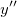
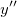
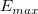
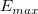

/math-e89cf9fbd875874b8818340c292e1dcf.png "\kappa=\frac{y''}{(1+y'^2)^{ \frac{3}{2}}}")
Es gibt vier Methoden, die in Origin verwendet werden, um die Basislinie automatisch in den Daten zu erkennen: Benutzerdefiniert für allgemeingültige Basislinienmodelle, ein spezifischer XPS-Modus für die spezielle Basislinie des Röntgen-Fotoemissionsspektrums, Gewichtete Endpunkte und Gerade Linie (nicht verfügbar für das Ziel Basislinie erstellen). Sie können auch einen konstanten Basislinienwert definieren oder über das Datenblatt bereits bestehende Basislinienpunkte bereitstellen.
Es werden vier Methoden für die Erkennung von Ankerpunkten verwendet, aber es werden nur die folgenden Methoden als "automatische Basislinienerkennung" verwendet.
Diese Methode basiert auf der Tatsache, dass die Basislinienfläche eine kleinere Krümmung hat als die Peakfläche. Die Krümmung einer Kurve wird definiert als:
wobei /math-d8ba4afe808679595d07bfca1e43afc6.png "y'") und  die erste bzw. zwei Ableitung der Kurve sind. Nachdem die Glättung des gleitenden Durchschnitts berechnet wurde, wird die zweite Ableitung bei jedem Datenpunkt berechnet. Als Nächstes werden alle Datenpunkte, deren zweite Ableitung sich 0 annähert (unter der Toleranz), dazu verwendet, eine polynomiale Anpassung zweiter Ordnung durchzuführen. Mit der angepassten Basislinie können wir dann die Punkte, die am nächsten an der angepassten Linie liegen, als Ankerpunkte übernehmen.
und  die erste bzw. zwei Ableitung der Kurve sind. Nachdem die Glättung des gleitenden Durchschnitts berechnet wurde, wird die zweite Ableitung bei jedem Datenpunkt berechnet. Als Nächstes werden alle Datenpunkte, deren zweite Ableitung sich 0 annähert (unter der Toleranz), dazu verwendet, eine polynomiale Anpassung zweiter Ordnung durchzuführen. Mit der angepassten Basislinie können wir dann die Punkte, die am nächsten an der angepassten Linie liegen, als Ankerpunkte übernehmen.
Diese Methode ist nützlich, wenn die Basislinie durch das Verbinden der negativen Peaks des Impulses erzeugt wurde.
Nachdem die Savitzky-Golay-Glättung berechnet wurde, wird die zweite Ableitung bei jedem Datenpunkt berechnet. Als Nächstes werden alle Peaks der Ableitung 2. Ordnung durch mit Hilfe der Lokales Maximum gesucht. Mit den Peaks der Ableitung 2. Ordnung können wir die Punkte, die am nächsten an den Peaks liegen, als Ankerpunkte übernehmen.
Bei dieser Methode wird der Glättungsalgorithmus Savitzky-Golay implementiert. Neben dem Schwellenwert der zweiten Ableitung wählt diese Methode auch die Punkte aus, die den Schwellenwert der 1. Ableitung überschreiten. Normalerweise bedeutet eine kleinere Ableitung eine kleinere Änderung im Originaldatensatz.
Diese Methode ist leistungsstärker, wenn die Basislinie annähernd konstant ist. In diesem Fall sind die erste und zweite Ableitung der Basislinie annähernd null.
Dieser Modus wurde insbesondere für die Analyse des Spektrums der Röntgenfotoemission entwickelt. Es werden zwei Optionen unterstützt: Shirley und Tougaard.
Der Algorithmus Shirley ist ein Versuch, Informationen über das Spektrum zu verwenden, um einen Hintergrund zu konstruieren, der sensibel auf Änderungen in den Daten reagiert. Die grundlegende Funktion des Algorithmus Shirley ist die iterative Determination eines Hintergrunds, wobei die Peakfläche verwendet wird, um die Hintergrundintensität bei einer Energie /math-3a3ea00cfc35332cedf6e5e9a32e94da.png "E") zu berechnen.
zu berechnen.
![B_n (E)=k_n \int_{E}^{E_{max}}dE'[I(E')-I_{max}-B_{n-1}(E')]](../images/Algorithm(PA)/math-c26f125d1710579c37d07ceeaff01589.png "B_n (E)=k_n \int_{E}^{E_{max}}dE'[I(E')-I_{max}-B_{n-1}(E')]") ,
,
wobei /math-d97304cbafc40d74d35ee27c96d0c58f.png "I_{max}") die Endpunktintensität bei der oberen Grenze der Energieeinteilung ist. In dem Dialog wird dieser Parameter als Endgültige Höhe bezeichnet. Der iterative Wert des Streufaktors wird gegeben mit
die Endpunktintensität bei der oberen Grenze der Energieeinteilung ist. In dem Dialog wird dieser Parameter als Endgültige Höhe bezeichnet. Der iterative Wert des Streufaktors wird gegeben mit
![k_n=\frac{I_{min}-I_{max}}{\int_{E_{min}}^{E_{max}}dE'[I(E')-I_{max}-B_{n-1}(E')]}](../images/Algorithm(PA)/math-728f59a444cfbe06fad8568ccf82064b.png "k_n=\frac{I_{min}-I_{max}}{\int_{E_{min}}^{E_{max}}dE'[I(E')-I_{max}-B_{n-1}(E')]}")
Die Basislinie Shirley ist auf 0 außerhalb des festgelegten Bereichs [/math-5fba6c1b3978b674cd5c9fefa85993e9.png "E_{min}") , ] gesetzt.
, ] gesetzt.
}{[1643+(E'-E)^2]^2}](../images/Algorithm(PA)/math-abcf3a0db1cb878affe073165665502a.png "B_n (E)=B_{n-1}+k \int_{E}^{E_{max}}\frac{dE'[I(E' )-I_{max}-B_{n-1}(E' )](E'-E)}{[1643+(E'-E)^2]^2}") ,
,
wobei /math-8ce4b16b22b58894aa86c421e8759df3.png "k") von der zuvor festgelegten Option abhängt,
von der zuvor festgelegten Option abhängt,
}{[1643+(E'-E)^2]^2}}](../images/Algorithm(PA)/math-69d0a27bbe50442b8d1122dfe20ea15e.png "k=\frac{I_{min}-I_{max}}{\int_{E_{min}}^{E_{max}} \frac{dE'[I(E')-I_{max}-B_{n-1}(E')](E'-E)}{[1643+(E'-E)^2]^2}}") ,
,
für die Option Endgültige Höhe und gleich dem Veränderlichen Parameter ist, wenn der Anwender die Option Veränderlicher Parameter ausgewählt hat.
Diese Methode wurde für den speziellen Fall entwickelt, in dem Sie eine Basislinie basierend auf den Endpunkten erstellen, sowohl Anfang als auch Ende.
Sie können einen bestimmten Bruchteil der Punkte als Endpunkte wählen, um die Basislinie zu entdecken. Die Glättungsmethode des gleitenden Durchschnitts wird dann verwendet, um das Rauschen zu reduzieren. Das Standardfenster zum Glätten beträgt 6 Prozent der insgesamt ausgewählten Punkte. Da diese Punkte als Basislinie angenommen werden, wird eine einfache lineare Interpolation verwendet, um die Basislinie zu erzeugen.
Hinweis: Diese Methode hängt stark von der Auswahl der Endpunkte ab. Sie sollten den Anteil der Endpunkte sorgfältig auswählen.
Die asymmetrische Glättung der kleinsten Quadrate (AsLS-Methode) wird zum Suchen der der Basislinie verwendet, so dass:
sie durch Minimieren der von zwei Termen implementiert wird: Distanzen zwischen Punkten und Basislinie, 2. Ableitungen der Basislinie. Die Summe kann folgendermaßen ausgedrückt werden:
wobei Y die ursprünglichen Daten, /math-7f3121d5be753123b397f22e2a1fb3e3.png "y_b") die berechnete Basislinie,
die berechnete Basislinie, /math-aa38f107289d4d73d516190581397349.png "w_i") die Gewichtung für jeden Punkt,
die Gewichtung für jeden Punkt, /math-c6a6eb61fd9c6c913da73b3642ca147d.png "\lambda") ein Faktor zum Ausgleichen von Residuum und der 2. Ableitung sowie der Glättungsfaktor in der X-Funktion das Protokoll dieses Werts ist.
ein Faktor zum Ausgleichen von Residuum und der 2. Ableitung sowie der Glättungsfaktor in der X-Funktion das Protokoll dieses Werts ist.
Die Iterationsprozeduren werden, wie unten zu sehen, eingeführt:
/math-ddb823a593bbbb3dfaf0d602adc5e422.png "w_i=1") verwendet und, sobald die Basislinie berechnet wird, wird der asymmetrische Faktor p auf Punkte oberhalb der Basislinie (für positive Peaks) als Gewichtung angewendet. Die Gewichtung für die restlichen Punkte ist 1-p.
verwendet und, sobald die Basislinie berechnet wird, wird der asymmetrische Faktor p auf Punkte oberhalb der Basislinie (für positive Peaks) als Gewichtung angewendet. Die Gewichtung für die restlichen Punkte ist 1-p.Es gibt fünf Methoden, die in Origin verwendet werden, um Peaks automatisch in den Daten zu entdecken: Lokales Maximum, Fenstersuche, 1. Ableitung, 2. Ableitung und Residuum nach 1. Ableitung. Die ersten drei Methoden sind für die normale Peaksuche in Daten entwickelt worden, während die letzten beiden für das Entdecken von verborgenen Peaks verwendet werden.
Das lokale Maximum stellt eine Brute-Force-Methode dar, bei der ein Suchalgorithmus das lokale Maximum in einem beweglichen Fenster sucht. Die Fenstergröße wird von der vordefinierten Anzahl der lokalen Punkte bestimmt.
Anfangs wird ein Fenster mit n Punkten an dem Anfangspunkt des Datenstroms positioniert. Das Maximum in diesem Fenster sowie in sein Index wird aufgezeichnet. Danach wird das Fenster eine Stufe weiter geschoben. Wenn das Maximum größer ist als das gespeicherte Maximum, aktualisieren Sie sowohl den Wert des Maximums als auch den Indexwert und verschieben dann vorwärts. Wenn das Maximum dabei aus dem Fenster bewegt wird, d.h., alle Punkte sind kleiner als das Maximum, dann wurde ein Peak gefunden und die gesamte Fensterkonfiguration wird für den nächsten Peak neu erstellt.
Die Methode der Fenstersuche unterscheidet sich von der Methode des lokalen Maximums durch die verwendeten Suchkriterien. Diese Methode verwendet eine festgelegte Fenstergröße, -höhe und -breite als Kriterium, während die Methode des lokalen Maximums in einem Fenster mit einer festen Anzahl von Punkten sucht.
Die Methoden der 1. Ableitung nutzen die Tatsache, dass die erste Ableitung einer Funktion bei einem lokalen Endpunkt gleich null ist. Es gibt zwei Optionen, mit denen bestimmt werden kann, ob die Originaldaten geglättet werden sollen. Diese Methoden sind: Kein und Savitzky-Golay.
Die drei oben beschriebenen Methoden werden verwendet, um die offensichtlichen Peaks in den Daten zu finden. Manchmal existieren jedoch verborgene Peaks in den Daten (siehe Abbildung unten). Origin bietet zwei Methoden, um verborgene Peaks in Ihren Daten zu entdecken.
Da die zweite Ableitung das Signal in den ursprünglichen Daten verstärken kann, können Sie die zweite Ableitung verwenden, um die verborgenen Peaks in den Daten zu entdecken. Die zweite Ableitung (rote durchgezogene Linie) der Daten mit verborgenen Peaks (schwarze durchgezogene Linie) wird in dem unten gezeigten Diagramm skizziert.
Im oben stehenden Diagramm können wir erkennen, dass das Signal des verborgenen Peaks verstärkt ist, wodurch es möglich wird, die verborgenen Peaks zu entdecken.
Origin bietet vier Methoden, um die Ableitung zu glätten: FFT-Filter, Savitzky-Golay, Gleitender Durchschnitt und Quadratische Savitzky-Golay. Bitte lesen Sie auf der Seite Algorithmus Smooth eine detaillierte Beschreibung.
Im ersten Schritt verwendet Origin die Methode der 1. Ableitung, um sichtbare Peaks zu suchen. Dann wird eine Reihe von Gaussian-Peakfunktionen verwendet, um das lokale Maximum in dem Datenstrom zu erzeugen. Ein verborgener Peak wird als Peak definiert, der diese lokale Maximum nicht erzeugen kann. Origin verwendet wieder die Methode der 1. Ableitung, um Peaks in den Residuendaten zu suchen.
/Residual_after_First_Derivative.png)
Die Methode der Fourier-Selbstentfaltung (FSD) wird verwendet, um sich überschneidende Peaks im Spektrum zu suchen.
Zuerst wird die FSD auf dem Spektrum berechnet. Dann werden mit der Methode des Lokalen Maximums die Peaks im FSD-Ergebnis gesucht. Origin verwendet dann die gefundenen Peakzentren, um die Peakhöhen aus den ursprünglichen Spektrumsdaten zu berechnen, und weiter zu prüfen, ob die Höhen die in den Peakfilteroptionen festgelegten Nebenbedingungen erfüllen.